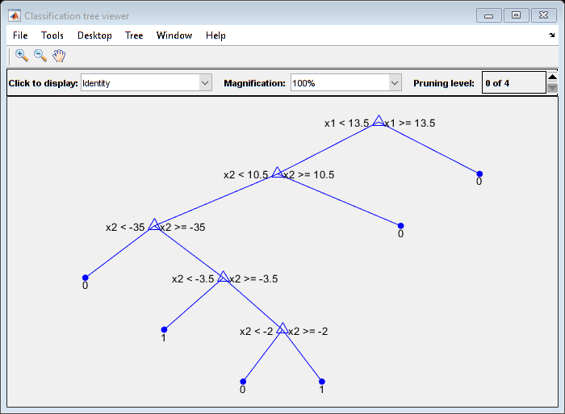
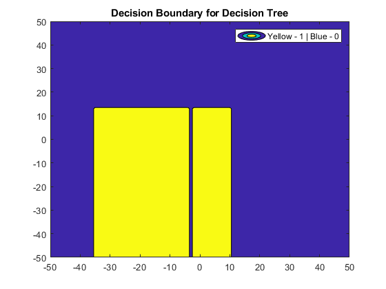
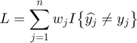
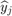
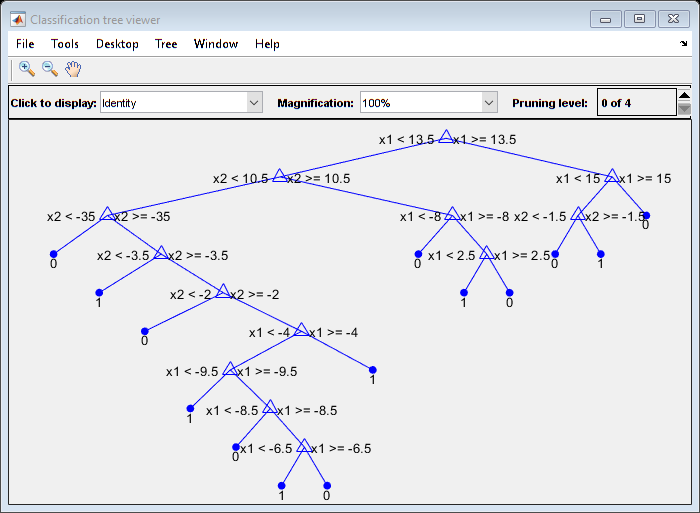
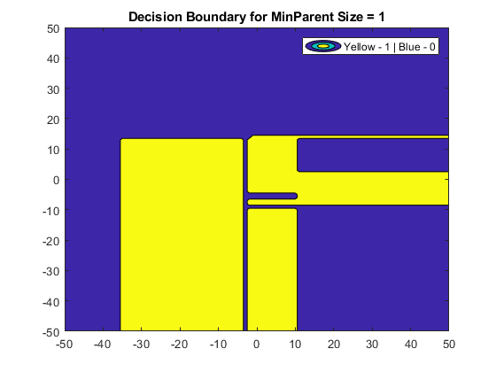

Exercise 1 - Visualization and Cross-Validation
Submitted by Prasannjeet Singh
Contents
Q1. Using fitctree()
load Data/data1.mat; mdl = fitctree(X,y); view(mdl); view(mdl, 'Mode','graph'); snapnow; hTree=findall(0,'Tag','tree viewer'); close(hTree);
Decision tree for classification 1 if x1<13.5 then node 2 elseif x1>=13.5 then node 3 else 0 2 if x2<10.5 then node 4 elseif x2>=10.5 then node 5 else 1 3 class = 0 4 if x2<-35 then node 6 elseif x2>=-35 then node 7 else 1 5 class = 0 6 class = 0 7 if x2<-3.5 then node 8 elseif x2>=-3.5 then node 9 else 1 8 class = 1 9 if x2<-2 then node 10 elseif x2>=-2 then node 11 else 1 10 class = 0 11 class = 1
Q2. Decision Boundary
The decision boundary was calculated by using the inbuilt method predict() which predicts the answer based on the decision tree created earlier. Using predict, all the values were calculated for a graph with both the axes (-50,50) and stored in a matrix. 50 was chosen manually by observing the scatter of the input data X. Later contourf() was used in the matrix to plot the decision boundary.
v = repmat(-50:50,[101,1]); % Creating a two-columned matrix 'z', that contains all the integer points % in a square graph of axes (-50,50). Next, using 'predict' to calculate % predicted answers for all the points in 'z'. z = [v(:) repmat([-50:50]',[101,1])]; bMatrix = predict(mdl,z); bMatrix = vec2mat(bMatrix,101); hFig = figure(2); contourf(-50:50,-50:50,bMatrix,1); title('Decision Boundary for Decision Tree'); legend('Yellow - 1 | Blue - 0'); snapnow; close(hFig);
What is the characteristic for the decision boundary of a tree? Conceptually, can you obtain any kind of decision boundary using decision trees?
In case of a decision tree, the algorithm tries to split the entire dataset in two parts based on any one feature, and the feature that will be chosen depends upon the greedy algorithm. Therefore, in our example which has a dataset with two features, the dataset with be split either horizontally or verticaly.
It is evident that regardless of the chosen axis, the algorithm can only split the dataset parallel to the x OR y axis at any iteration. This is a unique characteristic that can be observed in a decision boundary for a decision tree. Therefore, we can conclude that any kind of decision boundary, like what we saw in the assignment 1 is not possible in this case, and the boundaries will only consist of straight lines parallel to the x and y axis, as clearly seen in the above figure. However, it should be noted that if the dataset is huge and if the minimum parent size is very small, the decision boundary might appear to be of any shape, but a closer look (zoomed-in) will reveal that the boundaries are actually parallel to either x or y axis.
Q3. k-Fold Cross Validation
For choosing a value of 'k', following thoughts were taken into consideration:
- k is preferably a divisor of number of training sets (n).
- k is considerably small such that there is enough training data.
Since n is 60 in this example, k was taken as 10.
The function kfoldLoss() calculates the classification error, specified by 'LossFun','classiferror'. It is the weighted fraction of misclassified observations, with the equation:

Where  is the class label corresponding to the class with the maximal posterior probability. I{x} is the indicator function. (Taken from this link of the Matlab Documentation). Therefore, the final value can be multiplied with n (60 in our case) to get the total number of misclassifications.
k = 10; cvmodel = crossval(mdl,'KFold',k); WeightedLoss = kfoldLoss(cvmodel,'lossfun','classiferror','mode','average'); % round() is used below, as sometimes division by 6 can create fractional % values, and multiplying it by 60 again does not completely remove the % fractional part. ClassificationError = round(WeightedLoss*60)
ClassificationError =
10
Above we can see the total classification error obtained with 10-Fold cross validation. Note that the value is prone to change with every execution of the function, as the datasets are permuted before we perform k-Fold.
Q4. Zero training error decision tree.
mdl2 = fitctree(X,y,'MinParentSize',1);
bMatrix = predict(mdl2,z);
bMatrix = vec2mat(bMatrix,101);
Visualizing as a Graph:
view(mdl2, 'Mode','graph'); snapnow; hTree=findall(0,'Tag','tree viewer'); close(hTree);
Visualizing by the Decision Boundary:
hFig = figure(2); contourf(-50:50,-50:50,bMatrix,1); title('Decision Boundary for MinParent Size = 1'); legend('Yellow - 1 | Blue - 0'); snapnow; close(hFig);
k-Fold Cross Validation
k Value will be kept the same.
cvmodel = crossval(mdl2,'KFold',k); WeightedLoss = kfoldLoss(cvmodel,'lossfun','classiferror','mode','average'); % round() is used below, as sometimes division by 6 can create fractional % values, and multiplying it by 60 again does not completely remove the % fractional part. ClassificationError = round(WeightedLoss*60)
ClassificationError =
12
In the test run, the total classification errors in case of minimum parent size as the default value (10) was 9, and in case of minimum parent size as 1 was 13. (Note that the values may slightly change everytime this file is run).
The fact that total error in case of a decision tree with zero training error is more than the former is very much expected, as this comes under the category of overfitting, and as we have seen in various questions in previous exercises, overfitting always leads to high training errors. Although we do not have a training data in this case, k-Fold converts parts of the test data into training data in each iteration, therefore this can also, in a way, be considered as training error, which is higher in this case of overfitting.